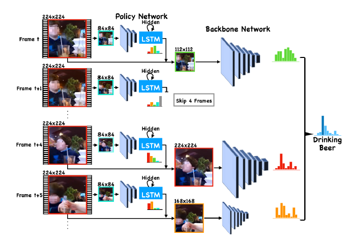

|
Chung-Ching Lin I am a research scientist at Microsoft. I received my PhD from Georgia Tech, where I was advised by tmp. |

|
|
Chung-Ching Lin I am a research scientist at Microsoft. I received my PhD from Georgia Tech, where I was advised by tmp. |
|
|  |
AR-Net: Adaptive Frame Resolution for Efficient Action Recognition
arxiv /
code /
project page /
bibtex
@article{arnet,
Title={AR-Net: Adaptive Frame Resolution for Efficient Action Recognition},
Author={Yue Meng, Chung-Ching Lin, Rameswar Panda, Prasanna Sattigeri, Leonid Karlinsky, Aude Oliva, Kate Saenko, Rogerio Feris},
Journal={ECCV},
Year={2020}}
|